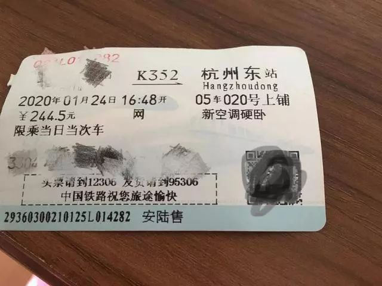
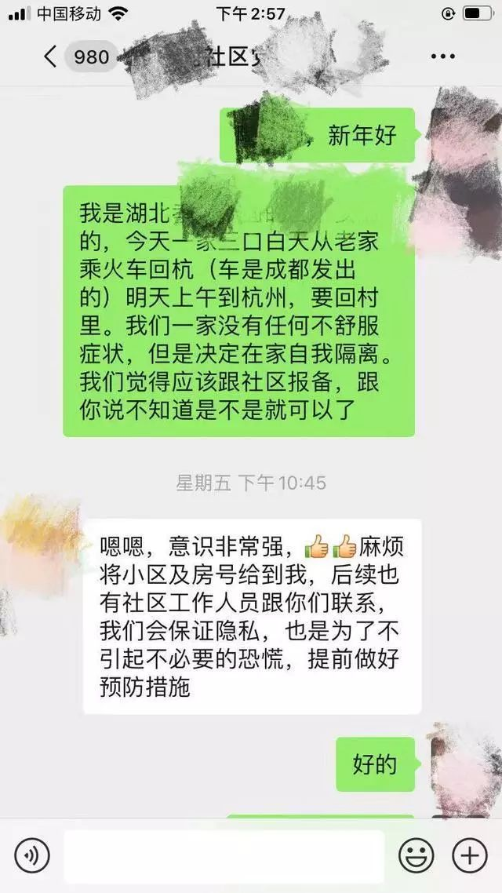
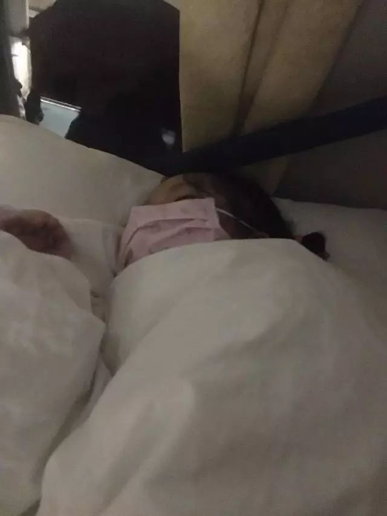
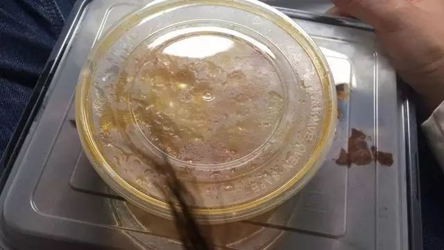
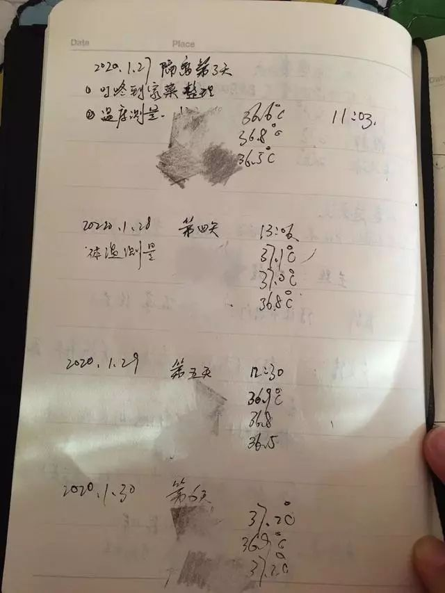
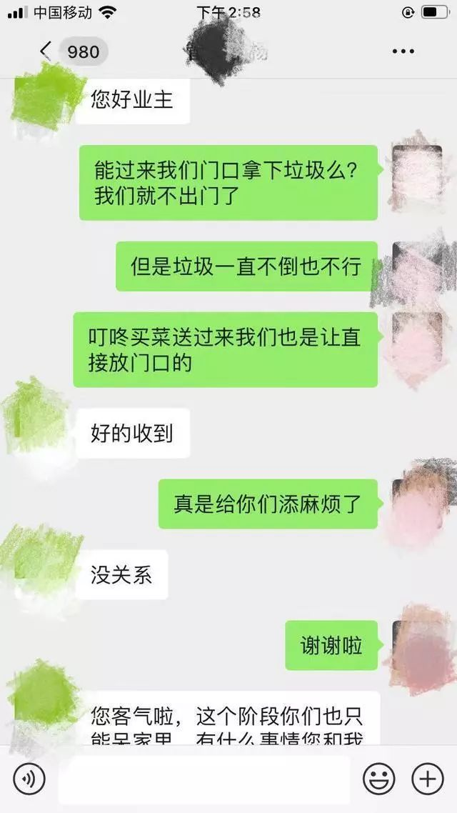
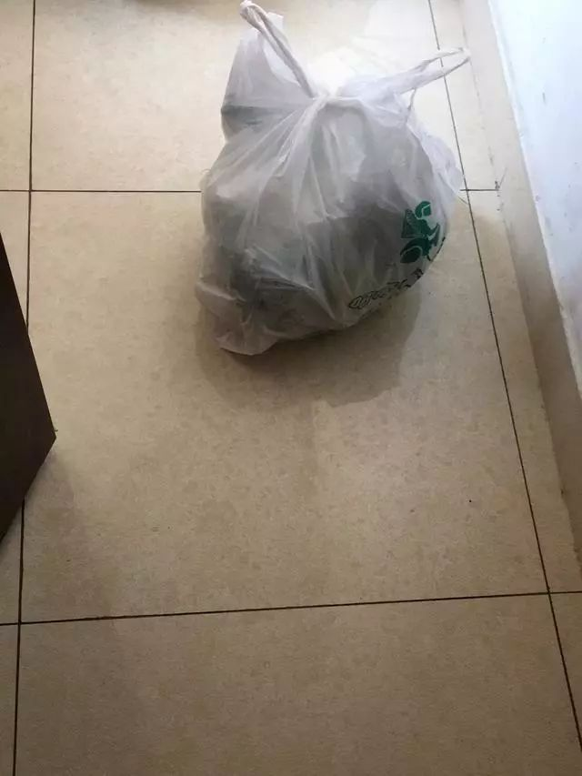
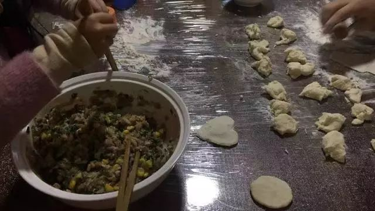

7位湖北人自述：我的“流浪”春节
原文链接 备份链接 《战疫口述记》，是燃财经在新型冠状病毒肺炎期间推出的特别栏目，记录疫情亲历者的观察和感受。本文为第3篇，查看前2篇请点击《农村这样防肺炎》《我在武汉战肺炎》。 作者 | 苏琦 金玙璠 孟亚娜 唐亚华 孔明明 魏佳 …

湖北是我的老家，杭州是我的家
口述/阿基米
从湖北回到杭州，我们一家三口开始14天的隔离生活。
本以为可能遭遇到歧视，结果——
社区说：“我们会保证您的隐私，谢谢您的配合。”
物业说：“您受委屈了，谢谢您的理解。”
这座充满温情和担当的城，就是我爱的那个家啊。
01
一改再改的返程，终于躲开“封城”
1月18日
那天早上5点钟我们一家三口就起床了。已经两年没回湖北老家了，这次早点回去给我爸妈拜年。完全不曾预料，这趟旅程居然会如此坎坷。
出发前，老公提醒我们春运火车站人流大、空气差，于是大人小孩都戴上口罩出发了。

▲我们一家三口年三十从安陆返回杭州
绿皮火车晃悠晃悠带着我们来到了武昌站，下车时我们全家依旧是全副武装的“蒙面党”。如今坐绿皮火车的人少了，武昌站下车的人并不多，也基本上没有几个人戴口罩。我们下车直奔地下停车场，家人已经在那边等我们了。
我老家在湖北安陆，车开了两个多小时，终于到了朝思暮想的老家，亲人们已经准备好了可口的饭菜在我们了，真高兴啊。
谁也不会想到，一天后，湖北的天就变了。
1月20日
晚上，钟南山院士在新闻中提到了武汉疫情，当晚孩子的幼儿园发来消息统计孩子的出行情况，我们和哥哥嫂子一下警觉了起来。
我赶紧下单给家里买了100多个口罩、消毒液，改签了从武汉出发的回程机票，改从宜昌出发。我对爸爸说，不要跟武汉回来的亲戚吃饭了，也不要再到处走动了。
很快武汉封城，湖北黄冈、赤壁也相继开始封城，情况比我们想象的更糟。
1月24日
大年三十。我大早在网上下了单，给家里囤了米、油、蔬菜、水等生活必需品。吃早饭的时候，我们开始发愁万一这里也封了，该怎么回杭州上班。封多久完全不能预料，总不能两个人都失业吧。
浙江的亲人也一个电话接一个电话来催，能早点回来就赶紧回来吧。
家人群里亲戚们陆续发来消息，先是家在广州的三叔说，买到回去的票了，一会儿就出发，接着在深圳上班的堂哥说准备马上开车返回深圳。我赶紧看了看火车票信息，居然还有两趟回杭州的火车，下午经停我们市，而且还有票。
爸爸说，那就赶紧买了走，再不走，怕是走不了了。你不用担心我们，我们都好好的，不会乱跑的。

▲返程火车票
下午四点的火车，买到了硬卧（上车补了软卧）。
我们匆匆吃了午饭，开始收拾行李。我抱着妈妈大哭了一场，我说，妈妈，我真想在家陪着你们啊，我们年夜饭都没有吃。妈妈说，傻孩子，你和xx在杭州有家有工作啊，我们总不能养你们一辈子，总是要回的。
老公跟单位报备了回杭的消息，女儿也打电话给幼儿园老师，说她要回杭州的家了，回家后会好好隔离的。老师叮嘱孩子路上一定戴好口罩，女儿保证睡觉也戴着。
哥哥开车把我们送到了火车站，我们戴上双层口罩，拎着箱子进站了。亲人们，不要进来送我们，不要。

▲全家戴着口罩返程
老家的火车站里，这个时候并没有人测体温。这是个不起眼的小站，来往的人一直不多。大家都戴着口罩，异常沉默。
我们一家三口站在角落里，尽量离人远一些，再远一些。突然隐约听见有人在喊我的名字，我扭头一看，是爸爸。他戴着口罩，隔着候车室的玻璃窗，在呼喊我朝我挥手。
我忍不住又流泪了，连连摆手让爸爸赶紧回家。
这趟从成都发往上海的列车，湖北省内本来经停很多小站，但是我们上车时，就只有我们市和另外一个市没有封，还能乘坐。当晚，我们市也封城了。

▲途中向社区报备
上车后，我跟杭州的社区报备回家的消息，告知抵杭后准备自我隔离。社区表示理解，并告诉我们会安排医生上门测体温，希望我们积极配合。
社区还说，会保证我们的隐私。
这几天一直都在跟孩子解释冠状病毒，她有一定的认识，所以一路上都异常乖巧。软卧车厢很闷热，我们一家三口把门关上，除了上厕所，几乎寸步不出。

▲女儿连睡觉都戴着口罩
女儿果真连睡觉都戴着口罩，小脸憋得通红，看了真心疼。
列车员过来说，可以预订晚餐了。我毫无胃口，但是这是大年夜，总要吃顿热乎饭菜，孩子也要吃啊。

▲在火车上吃了一顿难忘的年夜饭
我们全家订了一份鸡腿套餐，三个人一起吃完了这顿难忘的年夜饭。
02
社区物业严正以待，隔离生活倍感温暖
1月25日
火车上午抵杭。
我们花一百多元打了出租车回到郊区的家，并保存了车票。
到家后，全家洗澡、用品消毒。
我还在洗头时，社区医生、社区工作人员、物业来了。
全家人赶紧戴上口罩，开门迎接我们新年里的第一波客人。
社区医生给我们测量了体温、登记了信息、发放了防疫告知书。我说家里口罩只剩几个了，社区医生还送了我一包一次性口罩，医生说，口罩其实他们也不多了。
社区和物业叮嘱我们，这14天就不要出门了，有困难就跟他们说。
社区走后，我们烧了面条简单吃了一顿，我用买菜APP买了一些必需品，就开始召开家庭会议。
会议的主持人是我女儿，她说主题是：加强安全意识。

▲每天记录体温
三个人都明确了14天里各自的分工，比如女儿的任务是坚决不出门、教妈妈给娃娃扎头发，妈妈的任务是做好每顿饭，爸爸每天监测体温、洗碗扫地……
1月26日
买菜APP的小哥这时候还是上门送菜的，一听到他们敲门，我老公就喊：“放到门口好了!”
吃饭是没问题了，可是丢垃圾还成问题，总不能放在家里发臭。我微信跟物业求助，请他们帮忙把放在门口的垃圾倒掉。


▲跟物业的对话
物业管家说好的，他还说：“委屈你们了，谢谢您的理解和配合。”
这句贴心的话，让我又流泪了。
1月27日
很快，小区的进出口也开始严加管控。物业把两个出入口关闭为一个，业主进出需要测量体温，快递禁止进入。

▲买的菜放在大门口
买的菜到不了家了，告知物业后，他们每天都会帮我们放到家门口。
最近物业真的特别辛苦，工作量很大，让他们帮忙取东西真是有些不好意思。但是最近菜在网上也很难买，想买的总是买不齐，有的时候要买点东西只能早上下一单，晚上下一单，物业也一点不嫌麻烦，一天帮我们取两次菜。
每天早上，老公会给我们逐一量体温，记录在本子上。等接到来自派出所、社区、疾控中心的电话时，他会认真汇报我们的情况。孩子的幼儿园也几次发来消息，我们填报相关信息，并汇报一家人的情况。
我们把垃圾清到门口约一米远的地方，再跟物业发微信，过一会儿他会告诉我们已经清理好了。
买菜也是。菜到了，跟物业说一声，他们悄悄放到门口一米远的地方，再过一会儿微信告诉我们，已经送到了。

▲买菜APP上买的菜
他们来收垃圾和送菜时，我们根本一点声音都听不见。
杭州，就是我爱的那个家啊！
1月28日
我们虽然大门不出二门不迈，但是通过网络也能接收各种信息。
杭州市政府每天召开发布会，公布疫情和举措，虽然感染人数还是在上升，但人们心里还是比较放心的。
让人特别感动的一点是，在很多地方对武汉人、湖北人说“不”，拒绝进入时，杭州市大气接纳了因封城而回不了家的许多武汉旅客。他们的航班改签杭州，杭州都接纳了，而且毫不隐瞒第一时间通知了市民，安排武汉旅客入住党校，甚至还安排了萌萌的机器人来送餐，避免交叉感染。
看到这些新闻时，真的特别感恩“同胞”这个词。
我们所在的社区，社区党委每天都会发布疫情，包括有多少人在居家隔离，有多少人在酒店隔离。
社区还告诉大家，居家隔离的虽然没有派保安直接在门口守着，但是监控室里都看得到，也希望大家互相监督。
待在家里确实有些无聊，特别是还有一个5岁的孩子。幼儿园老师跟我说，如果孩子无聊，可以虽然给她打电话，她很开心的。

▲一家人跳操
为了保证孩子的运动量，我们决定每天在家跳跳操，早晚各一次，早上女儿领操，晚上老公领操。
怕吵到楼下，我们跟楼下邻居说了一声。她说：“跳吧，跳吧！”
1月29日
女儿特别想吃饺子。可是连着几天我没买到她喜欢的速冻饺子，面粉也只剩小半斤。我决定还是给她包饺子，稍微做几个，也算是亲子活动打发时间。

▲在家包饺子
水放太多了，饺子失败了，烙了大饼。
邻居知道后，马上给我送来了一大袋亲手做的速冻饺子。他敲敲我家门，我让他放在门口，说不尽的感谢。
女儿吃了满满一碗饺子。
晚上跟湖北的妈妈视频，我担心她，她说家里一切都好，物资充足，还可以打打麻将，爸爸也不外出跑步了，就在跑步机上跑跑。她很担心我。
我说，我一切都好，享受到了VIP待遇，连垃圾都有人帮忙倒。
“妈妈，你放心，我们在杭州很好。等这次过去，我们还会再回湖北，给您好好补一个年。”

记录平凡而普通
的人生


你“在看”我吗？点一下让我知道

原文链接 备份链接 《战疫口述记》，是燃财经在新型冠状病毒肺炎期间推出的特别栏目，记录疫情亲历者的观察和感受。本文为第3篇，查看前2篇请点击《农村这样防肺炎》《我在武汉战肺炎》。 作者 | 苏琦 金玙璠 孟亚娜 唐亚华 孔明明 魏佳 …
原文链接 备份链接 31.01.2020本文字数：2022，阅读时长大约3.5分钟 导读：武汉封城后，1月23日至27日5天，仍旧有1.88万人从湖北特别是武汉到达温州，平均每天有3600多人。 作者 | 第一财经 吴将 截至1月31日 …
原文链接 备份链接 “ 我以为离开湖北就是安全的，没想到我让女儿过了一个没有地方住的新年。 鄂州，距离武汉只隔50km，距离黄冈只隔一座鄂黄大桥，这个被本地人自嘲是“肉夹馍”的城市，一向不被大多数人关注。 在封城期间，鄂州人的日常生活是怎 …
原文链接 备份链接 ——《杂谈》：口罩之下的众生相—— 第一个故事：红事好改，白事难劝 行政办公室的归有光给我发来一条信息，是县政府转下来的，来源是三江市市长信箱：有梅花沟的群众举报梅花沟社区干部尸位素餐不作为，社区内有一户人家老人去世， …
原文链接 备份链接 经历这样的危机事件，对孩子幼小的心灵会有很大冲击，同时也可以成为孩子心理成长的契机。 面对新型冠状病毒肺炎，即便是医务人员的我，也感到心烦意乱。一边不停地刷疫情进展、实时报道，心情随着数字起伏不定，一边操心买口罩、买 …